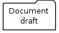

Table Of Contents
Previous topic
1. Part and document cloning: specifications

1. Part and document cloning: specifications
Warning
The following rules may not have been implemented.
TODO: Add examples, list tests validating these rules.
- All standard lifecycles shall have an official status
- All standard lifecycles shall have a deprecated status
- All standard lifecycles shall have one or more status before official status (draft, to be validated, ...)
- Only one object with the same type/reference shall be at official status
Part without children shall have at least one linked official document before being promoted
Examples:
Can promote:
![digraph {
node [fontsize=10, shape="box", width=".2", height=".2"];
subgraph g {
part [label="Part\ndraft"]
doc [label="Document\nofficial", shape="folder"]
doc -> part;
}
subgraph g2 {
part1 [label="Part\ndraft"]
doc1 [label="Document\nofficial", shape="folder"]
doc2 [label="Document\ndeprecated", shape="folder"]
doc1 -> part1;
doc2 -> part1;
}
subgraph g3 {
part3 [label="Part\ndraft"]
doc31 [label="Document\nofficial", shape="folder"]
doc32 [label="Document\ndraft", shape="folder"]
doc31 -> part3;
doc32 -> part3;
}
}](../_images/graphviz-2003c9af59defe01d5b239fe4928b093afd48f5f.png)
Can not promote:
![digraph {
node [fontsize=10, shape="box", width=".2", height=".2"];
subgraph g1 {
part [label="Part\ndraft"]
}
subgraph g2 {
part1 [label="Part\ndraft"]
doc1 [label="Document\ndraft", shape="folder"]
doc2 [label="Document\ndeprecated", shape="folder"]
doc1 -> part1;
doc2 -> part1;
}
subgraph g3 {
part3 [label="Part\ndraft"]
doc31 [label="Document\ndraft", shape="folder"]
doc31 -> part3;
}
}](../_images/graphviz-00a3aea0bc40f74b48a455c3e482ae2830727dfb.png)
Tests:
- plmapp.PartControllerTest.test_is_promotable1
- plmapp.PartControllerTest.test_is_promotable_no_document
- plmapp.PartControllerTest.test_is_promotable_no_official_document
- plmapp.PartControllerTest.test_is_promotable_one_official_document
Document shall not be promoted without a file in it or equivalent
Examples:
Can promote:
![digraph {
node [fontsize=10, shape="box", width=".2", height=".2"];
subgraph g {
file [label="File\nunlocked", shape="note"]
doc [label="Document\ndraft", shape="folder"]
doc -> file;
}
subgraph g2 {
file1 [label="File\nunlocked", shape="note"]
file2 [label="File\nunlocked", shape="note"]
doc2 [label="Document\ndraft", shape="folder"]
doc2 -> file1;
doc2 -> file2;
}
}](../_images/graphviz-75ae5d13660f78f24b82c840cc817bb7e3e35a4d.png)
Can not promote:

Tests:
- plmapp.DocumentControllerTest.test_is_promotable_no_file
- plmapp.DocumentControllerTest.test_is_promotable_one_unlocked_file
- suversion.SubversionRepositoryTestCase.test_is_promotable
Document shall not be promoted if one of their files is locked
Examples:
Can promote:
Can not promote:
![digraph {
node [fontsize=10, shape="box", width=".2", height=".2"];
subgraph g {
file [label="File\nlocked", shape="note"]
doc [label="Document\ndraft", shape="folder"]
doc -> file;
}
subgraph g2 {
file1 [label="File\nlocked", shape="note"]
file2 [label="File\nunlocked", shape="note"]
doc2 [label="Document\ndraft", shape="folder"]
doc2 -> file1;
doc2 -> file2;
}
}](../_images/graphviz-db520321124f2706aec3f92f3b398715f6c2620a.png)
Tests:
- plmapp.DocumentControllerTest.test_is_promotable_one_locked_file
- plmapp.DocumentControllerTest.test_is_promotable_one_unlocked_file
- plmapp.DocumentControllerTest.test_is_promotable_two_unlocked_files
Promoting one object to official status shall push the prior official revision to deprecated status
Tests:
- plmapp.ControllerTest.test_promote_to_official_revision_previous_is_official
Promoting one object to official status shall push all prior non official revisions to cancelled lifecycle
Tests:
- plmapp.ControllerTest.test_promote_to_official_revision_previous_is_editable
Parent part shall not be promoted to a status higher than its child’s status:
Warning
What to do if the lifecycles are different?
An object can only be cancelled by its owner
Tests:
- plmapp.ControllerTest.test_cancel_not_owner
Tests:
- plmapp.ControllerTest.test_cancel_owner
When an object has more than one revision, none of its revisions can’t be cancelled
Tests:
- plmapp.ControllerTest.test_cancel_revised
Non draft objects can’t be cancelled
Tests:
- plmapp.ControllerTest.test_cancel_draft
- plmapp.ControllerTest.test_cancel_not_draft
If a part is wether a child or a parent, it can’t be cancelled
Tests:
- plmapp.PartControllerTest.test_cancel_has_child
Tests:
- plmapp.PartControllerTest.test_cancel_has_parent
If a part is related to a document and inversely, it can’t be cancelled.
Tests:
- plmapp.PartControllerTest.test_cancel_has_document_related
Tests:
- plmapp.DocumentControllerTest.test_cancel_has_part_related
When an object is official, ownership shall switch from one user to Company
Tests:
- plmapp.ControllerTest.test_promote_to_official_status
When an object is deprecated, ownership shall stay to Company
Tests:
- plmapp.ControllerTest.test_promote_to_deprecated_status
Non official objects can’t switch to Company ownership
Tests:
- plmapp.ControllerTest.test_set_owner_error2
Object is visible only by its group’s users when its status is before official
Tests:
- plmapp.ControllerTest.test_is_readable_group_ok
- plmapp.ControllerTest.test_is_readable_group_invalid
- plmapp.ControllerTest.test_is_readable_owner
- plmapp.ControllerTest.test_is_readable_company
Object is visible by all users when its status is official
Tests:
- plmapp.ControllerTest.test_is_readable_not_editable
Object is visible by all users when its status is deprecated
Tests:
- plmapp.ControllerTest.test_is_readable_not_editable
Object can only be edited by its owner
Tests:
- plmapp.MechantUserViewTest.test_edit_attributes
Part links can be created/removed only by its owner
Tests:
- plmapp.PartControllerTest.test_add_child_error_not_owner
- plmapp.PartControllerTest.test_delete_child_error_not_owner
Part links can’t be removed at official status
Tests:
- plmapp.PartControllerTest.test_delete_child_error_official_status
Part’s child links can’t be created/removed at official status
Tests:
- plmapp.PartControllerTest.test_add_child_error_official_status
- plmapp.PartControllerTest.test_delete_child_error_official_status
Part’s parent links can be created/removed at official status
Tests:
- plmapp.PartControllerTest.test_add_child_error_official_status
- plmapp.PartControllerTest.test_delete_child_error_official_status
Owner can create/remove links between draft Documents and parts at all status
Ownership and other signature rights can be modified only by its owner
All users who can see an object can revise it
Only the last revision can be revised
An object can be revised whatever is its status (except deprecated)
Tests:
- plmapp.ControllerTest.test_revise_error_deprecated_object
- plmapp.Controller.test_revise
- plmapp.Controller.test_revise_official
The user who revises an object can change the group of the revised object? ??
- When an object is promoted to official status, all members of the group shall be notified by e-mail
- When an object is promoted the next signer shall be notified by e-mail
- When an object is demoted the previous signer shall be notified by e-mail
Shall have only one status: Cancelled
Object is visible by all users
Ownership is Company
Object is cancelled if it is pushed by another promoted to official status
Tests:
- plmapp.ControllerTest.test_promote_to_official_revision_previous_is_editable
All part-part and part-document links shall be removed
Cancelled objects can’t be edited nor modified
Users can’t revise an object with cancelled status
Tests:
- plmapp.ControllerTest.test_revise_error_cancelled_object